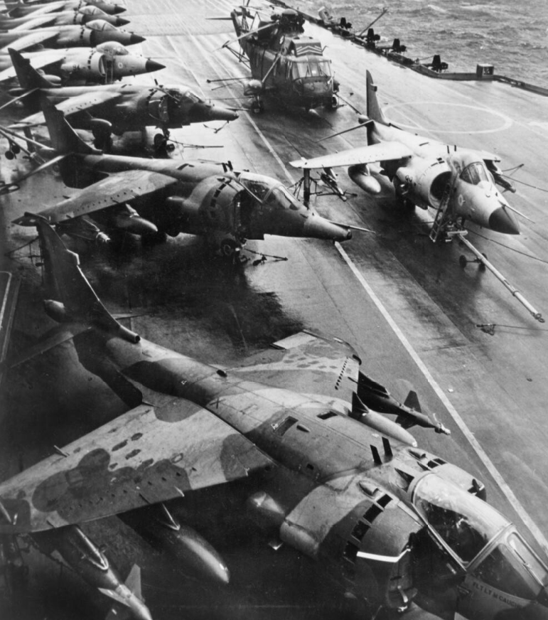
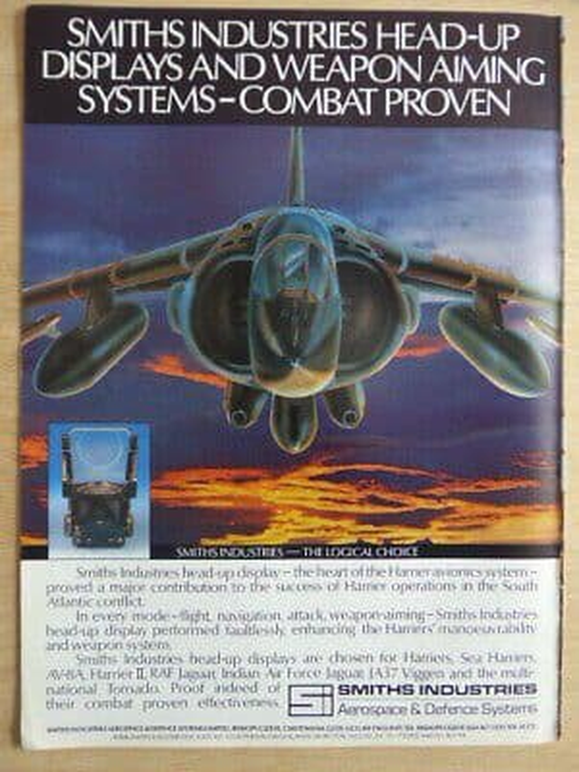
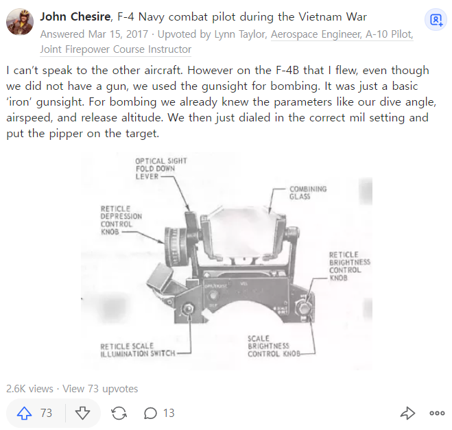
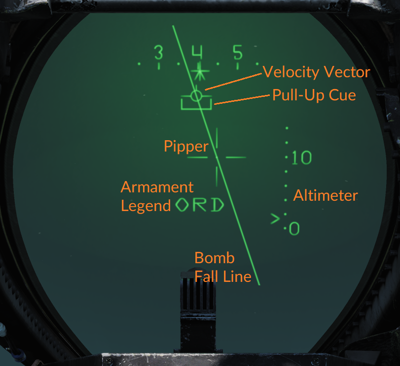
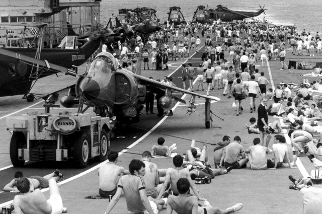
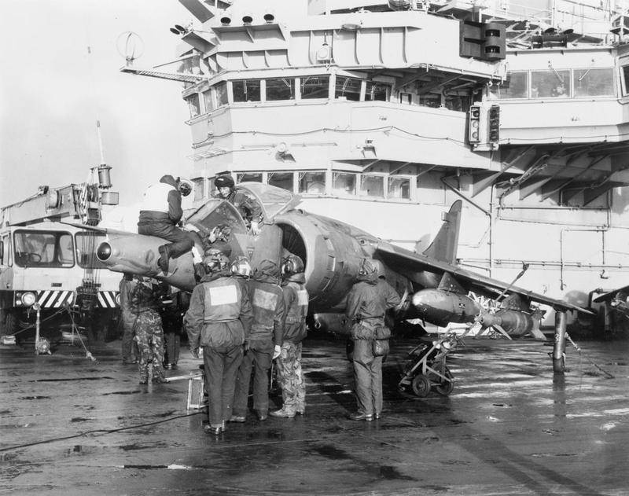
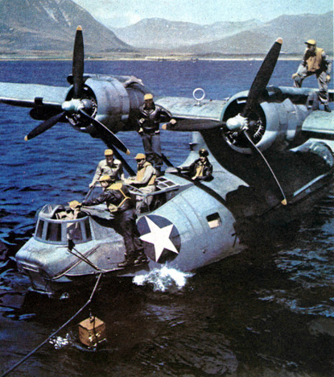
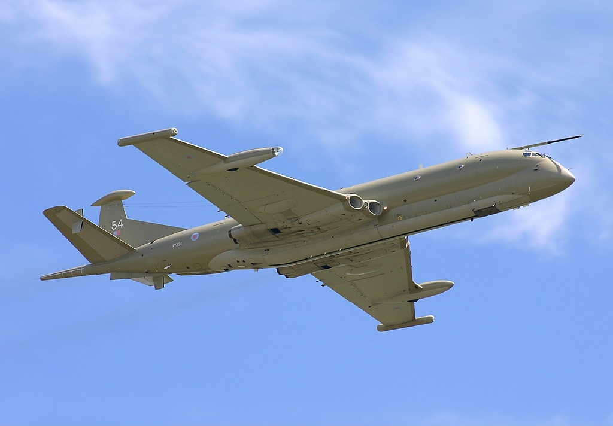
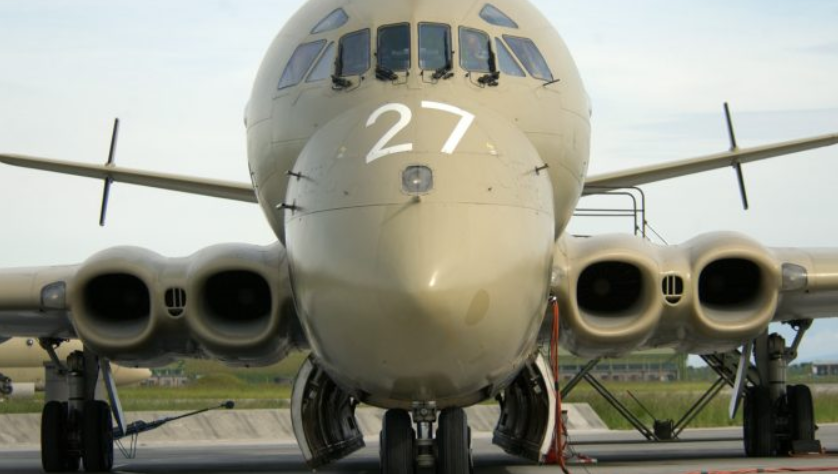

포클랜드 전쟁 항공전 잡설 (11/11)
게시: 2021-11-11T06:30:51+09:00
<공군 아저씨들, 당황하셨어요?> 포클랜드 전쟁에 참전한 해리어들은 크게 2종류. 선량한 시민들이 보기엔 똑같은 해리어 전투기지만 원래 공군 소속 해리어는 Harrier GR3이고 해군 소속은 Sea Harrier FRS.1. 기능상 가장 큰 차이는 대지상 공격 능력. 해군용 Sea Harrier FRS.1의 임무는 그냥 제공권 장악이라서 대지 공격 능력이 사실 없었음. 그에 비해 공군용 Harrier GR3는 대지 공격용 컴퓨터와 항법 시스템을 갖춰 지상 목표물 공격에 적합. 그러나 막상 항공모함에서 지상 목표물 폭격 준비를 하던 영국 공군 정비사들은 급당황. 지상에서는 해리어에 장착된 관성유도장치(INS)를 세팅하는데 아무런 문제가 없었는데 파도에 계속 흔들리는 항공모함 격납고에서는 관성유도장치의 정확한 calibration이 불가능했던 것. 문제는 폭탄을 투하할 때 HUD(Head Up Display)에 표시되는 CCIP(Constantly Computed Impact Point)과 CCRP(Continually Computed Release Point)가 있어야 정확한 폭격이 가능. 그래서 어쩔 수 없이 그냥 HUD에 십자선 그려놓고 조종사들에게 스톱웟치 하나씩 쥐어주고 대충 눈짐작으로 폭격하라고 당부. 사진에서 맨 앞 3대가 포클랜드 전쟁 당시 HMS Hermes 함상에서 출격 준비 중인 영국 공군 제1 비행단의 Hawker Siddeley Harrier GR3들. 맨 앞의 Harrier GR.3 날개 밑에 1천파운드짜리 레이저 유도 폭탄(GBU-16 Paveway II)이 장착된 것이 보임. 뒷줄에 늘어선 것은 영국 해군의 Sea Harrier들. 자세히 보면 해군 Sea Harrier들의 조종석이 공군 Harrier GR3에 비해 cockpit이 좀더 튀어나와 있는 것이 보임. 함재기 특성상 좀더 탁 트인 시야 확보가 해군의 요청이었다고.
 
<1970~80년대 전폭기들은 어떻게 폭탄을 조준했나> WW2 당시에는 유명한 Norden Bombsight 등 온갖 정밀 폭탄 조준기가 있었으나 그건 조종사와 폭격수가 분리되어 있는 전문 폭격기에서나 가능했던 일이고, 제트기 시대에는 어지간한 폭격 임무는 1~2명의 파일럿이 탑승한 전폭기들이 수행했는데 과연 어떤 방식으로 별다른 유도 시스템이 없는 멍텅구리 폭탄을 조준했을까? 1960년대에 나온 F-4B Phantom만 하더라도 딱히 정밀 폭격 유도 장치가 있었던 것은 아니고 그냥 텅빈 HUD(Head Up Display)에 지상 목표물을 눈 대중으로 두고 미리 계산해서 가지고 간 투하 고도, 투하 속도, 강하 각도 등에 따라 기계적으로 투하하는 방식. (사진1) 그런데 나중에 전폭기에 컴퓨터가 들어오면서 CCIP(Constantly Computed Impact Point)와 CCRP(Continually Computed Release Point)의 개념이 도입됨. CCIP는 현재의 고도, 속도, 상승/강하 각도에서 해당 폭탄을 지금 투하하면 어디쯤에 떨어질지를 컴퓨터가 계산해서 자동으로 표시해주는 것이고, CCRP는 반대로 특정 지상 목표물에 폭탄을 명중시키려면 언제 투하 버튼을 눌러야 하는지를 표시해주는 장치. 이 정보들은 HUD 상에 온갖 다른 정보들과 함께 실시간으로 계속 display되는데, 적 전투기에게 쫓기며 대공포탄이 여기저기서 날아오는 가운데 이런 복잡한 정보들을 머릿속으로 소화해가며 폭격 임무를 수행하는 것은 보통 스트레스가 아닐 듯. 사진2에서 십자선이 store impact point pipper, 즉 지금 버튼을 누르면 해당 폭탄이 떨어질 지점. Pull-Up Cue라는 꺽쇠 표시는 전폭기가 계속 내려가면서 점점 폭탄 투하선(Bomb Fall Line)을 따라 올라가게 되는데 저게 Velocity Vector 표시를 넘어서면 '자신이 투하한 폭탄의 폭발에 영향을 받을 수 있는 안전 한계 고도' 이하로 내려왔다는 뜻이라고... 내가 대학생 때인가 열심히 하던 F-16 시뮬레이션 게임이 하도 리얼하게 구현되어 있어서 조종하기도 어렵고 폭탄 투하하는 것도 너무 어려워서 짜증이 났던 기억이 남. 전에 언급한 포클랜드 전쟁 당시 영국 공군 소속 Harrier GR3의 정비사들이 끊임없이 흔들리는 항공모함 격납고에서 관성유도장치(INS)를 세팅할 수가 없어서 폭격 임무를 띠고 나가는 조종사들에게 그냥 HUD에 십자선 그어주고 스톱웟치 하나씩 줬다는 이야기가 저 CCIP와 CCRP의 계산을 위해서는 항공기의 관성유도장치(Inertial Navigation System)의 정확한 세팅이 필요했기 때문.
 
<오븐 속의 사이드와인더> 흔히 똑같은 전투기라도 함재기용 버전이 더 비싼데 이유는 항모 착함을 위해 랜딩기어 등이 훨씬 튼튼할 뿐만 아니라 소금물에 의한 부식을 막기 위한 처리가 되어 있기 때문. 포클랜드 전쟁 때 해군용 Sea Harrier FRS.1는 그런 문제가 없었으나 급히 싣고 간 공군용 Harrier GR3는 그런 부식 방지 처리가 전혀 안 되어 있었음. 그래서 기체가 다 썩었을까? 썩었음. 그러나 영국 해공군의 정비사들은 뛰어난 창의력을 발휘. 가령 Harrier GR3의 계기판에는 얇은 접착식 셀로판지를 붙였는데 그게 소금물을 막아주어 전자장비의 고장을 크게 줄여주었음. 또 바닷물에 젖은 사이드와인더 미사일을 밤에 주방의 빵 굽는 오븐에 넣어서 말렸음. 심지어 당시엔 해리어에 채프 발사기가 달려 있지 않아서 적의 레이더 유도 대공 미사일에 취약했는데, 해리어의 에어 브레이크 안에 채프를 장착해서 유사시 에어브레이크를 펼치는 방식을 쓰기도.
 
<이거 참 뻘쯤하구먼> 미사일 쏘고 폭탄 떨구는 전투기들 못지 않게 중요한 것이 바로 정찰기. 특히 목표물이 어디 있는지, 어떻게 찾아갈지가 명확한 지상 목표물이 아니라 망망대해에서 끊임없이 움직이는 적 함대가 목표물인 경우 정찰기는 전투기보다 더 중요. 그래서 많은 국가들이 maritime patrol aircraft (MPA)를 별도로 운용. WW2 때 미해군의 Consolidated PBY Catalina (사진1)이 그런 것이고, 요즘의 P-8 Poseidon이 또 그런 것. 포클랜드 전쟁 때 영국과 아르헨티나 양쪽 모두 이런 MPA를 운용. 영국은 Hawker Siddeley Nimrod(사진2,3. 못생겼어... 어떡해...)를, 아르헨티나는 Boeing 707을 전개. 아르헨 707이야 본토에서 날아왔고 영국의 님로드는 적도 부근의 아센시온 기지에서 날아옴. 포클랜드 전쟁은 반경 200 해리(370 km)의 Total Exclusion Zone 내에서만 수행된 제한적 분쟁. 하지만 아르헨 해군의 Belgrano는 이 TEZ 밖에서 격침되었듯이 이 반경 밖이라고 해서 꼭 안전한 것은 아니었음. TEZ 안에서야 저런 비무장 정찰기도 공격 대상이었지만 TEZ 밖에서는 어땠을까? 처음에 영국 항모전단이 TEZ 근처로 접근했을 때 아르헨은 정찰을 위해 707을 과감히 들이밀었는데, 영국 함대는 해리어 전투기들을 동원해 협박하여 쫓아냄. 나중에 전투가 시작된 이후인 5월 22일 또 비슷한 상황이 벌어지자 구축함 HMS Cardiff가 707에게 몇발의 Sea Dart 대공 미사일을 발사했으나 빗나감. 이후 아르헨은 감히 접근하지 못했음.
한번은 (기록에 따라서는 2번) 영국 님로드와 아르헨 707이 서로 마주침. WW1 초기에는 비무장 정찰기들끼리 마주치면 서로 경례를 하며 지나갔다지만 이때는 어땠을까? 서로 비무장이라 뻘쯤하긴 했는데 그냥 서로 쳐다보기만 했을 뿐 근접해서 탑건의 톰 크루즈 흉내를 낸다거나 플레이보이 잡지를 흔들어보이거나 그런 짓은 하지 않았다고. 아르헨 707의 기록은 없으나, 영국 님로드는 그때 열심히 무전을 쳐서 바로 80km 밖에 있다는 영국 항모에게 '해리어 빨리 올려보내서 저 놈 격추시켜라'라고 알렸다고 함. 이 무전을 저 멀리 적도의 아센시온 공군 기지에서는 잘 수신했으나, 정작 바로 옆의 영국 항모들은 받지 못했다고. 해군과 공군은 원래 그렇게... 이때의 아픈 기억 때문에 영국 해군과 공군은 서로 잘 통신하기 위해 별도의 통신 장비를 공구했으나 영국 공군은 결국 사놓기만 하고 쓰지 않았다고. 그래서 90년대 보스니아 내전 때 파병된 이탈리아군이 영국군과 교신이 안된다고 불평을 했을 때 영국군은 속으로 '우리끼리도 통신이 안되는데 뭘 바라냐'라고 웃었다고...
  